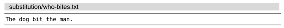

）。
）。技巧95交换两个或更多的单词
通过使用表达式寄存器以及Vim脚本中的字典数据结构（dictionary），我们可以设计一条特殊的substitute命令，用它来对两个单词进行互换。
看一下这段文本：

假设我们想对单词“dog”和“man”进行互换。当然，正如在交换两个词中所展示的那样，我们可以用一系列复制与粘贴操作完成这个任务。但是这一次，让我们考虑一下如何用substitute命令来实现这个功能吧。
事先声明，即将尝试的方法未免有些幼稚可笑：
➾:%s/dog/man/g
➾:%s/man/dog/g
第一条命令将“dog”替换成“man”，整句变为“the man bit the man”。而第二条命令又将“man”替换成“dog”，整句变为“the dog bit the dog”。很明显，我们需要再接再厉。
执行两遍substitute命令的方案难以奏效，因此，我们要靠一次substitute命令来搞定它。具体来讲，撰写一个既能匹配“dog”又能匹配“man”的模式并不难（请你想一想），难的是撰写一个特殊的表达式，它以一个单词作为输入，将其转换成另一个单词作为输出。接下来，让我们先解决这个难题。
返回另一个单词
我们甚至不需要创建函数就可以实现这个功能。我们只需为此简单地定义一个字典数据结构，其中包含两组键-值对。请在Vim中输入以下命令：
➾:let swapper={"dog":"man","man":"dog"}
➾:echo swapper["dog"]
《 man
➾:echo swapper["man"]
《 dog
当我们将"dog"作为“键”传入字典swapper时，它会返回"man"，反之亦然。
匹配两个单词
你的模式撰写完了么？现在公布答案：
➾ /\v(<man>|<dog>)
此模式可以轻松地匹配整个单词“man”或整个单词“dog”。其中，圆括号用于捕获已匹配的文本，方便我们在替换域中引用。
合而为一
让我们把所有命令连贯起来执行。首先，运行查找命令，使“dog”与“man”高亮起来。然后，在运行substitute命令之前，把查找域留空，这样将会简单地重用上次的查找模式（正如我们在技巧90中所讨论的那样）。
至于替换的内容，我们必须通过执行一小段Vim脚本才能获得。这意味着要在替换域中使用符号\=。这一次，我们用不着将字典数据赋给变量，这太麻烦了，我们只需在替换域中创建一次性使用的字典数据结构即可。
我们通常使用Vim的符号\1、\2（以此类推）来引用被捕获的文本。但在Vim脚本中，我们必须调用submatch() 函数才能得到被捕获的文本（参见:h submatch()）。
当我们把所有的命令连起来后，会形成如下序列：
➾ /\v(<man>|<dog>)
➾:%s//\={"dog":"man","man":"dog"}[submatch(1)]/g
结论
这是一个得不偿失的例子，因为，我们不得不将单词“man”与“dog”完整地输入3遍。很明显，如果我们在文档中依次修改这两个单词，会更快地完成任务。但是，如果这些单词多次出现在一大段文本之中，这些额外的操作将会很快彰显其优势。值得注意的是，这种技术可以方便地进行扩展，例如，在一次替换操作中互换3个或更多的单词。
还有一个问题依然存在，即全部命令需要手动输入。通过引入更多的Vim脚本，我们可以撰写一个自定义的命令，它会把所有重复性的工作隐藏起来，只提供一个更为友好的用户接口。尽管这已经超出了本书的范围，但你可以通过阅读Abolish.vim:超级substitute命令，来获得更多的启发。
Abolish.vim：超级substitute命令
在所有由Tim Pope开发的插件之中，Abolish(2)是我最喜爱的一种。它为Vim贡献了一条名为:Subvert的自定义命令（或者简写为:S），其作用类似于Vim内置命令:substitute的增强版本。凭借这个插件，我们只需输入以下命令，就可以轻松实现单词“man”与“dog”之间的交换操作。
➾:%S/{man,dog}/{dog,man}/g
与substitute命令相比，这个自定义命令不仅更容易输入，而且也更灵活。类似于“dog”替换“man”（反之亦然）的方式，它也可以轻松应对诸如“DOG”替换“MAN”，或者“Dog”替换“Man”的情况。对于这个伟大的插件，本例仅仅是管中窥豹，因此，我鼓励你发掘它在其他方面的潜能。